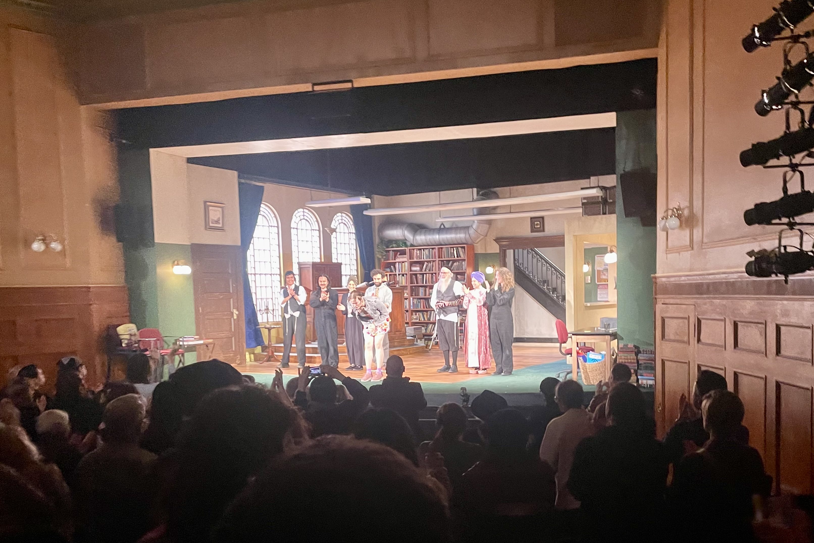
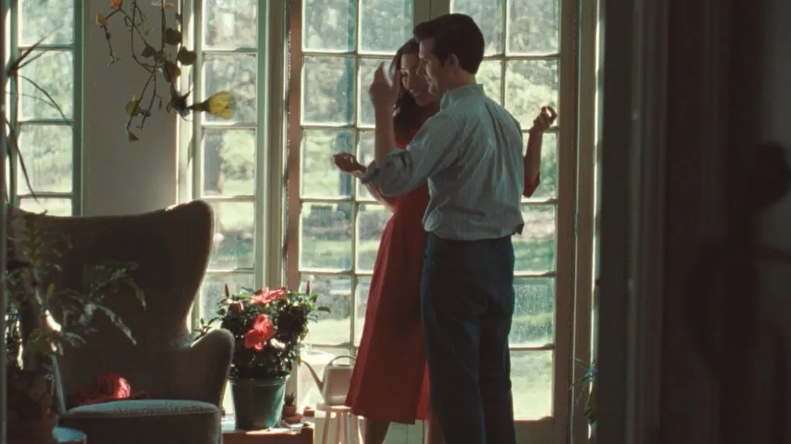
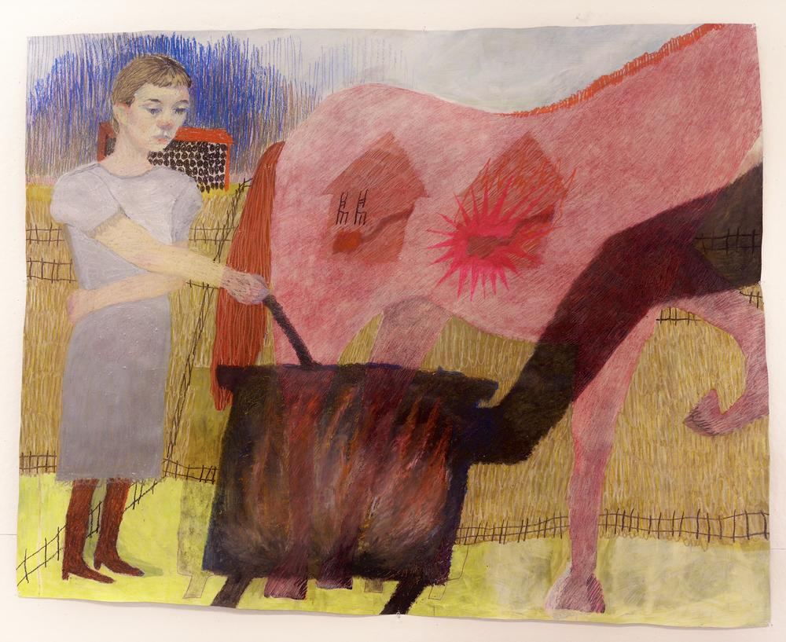
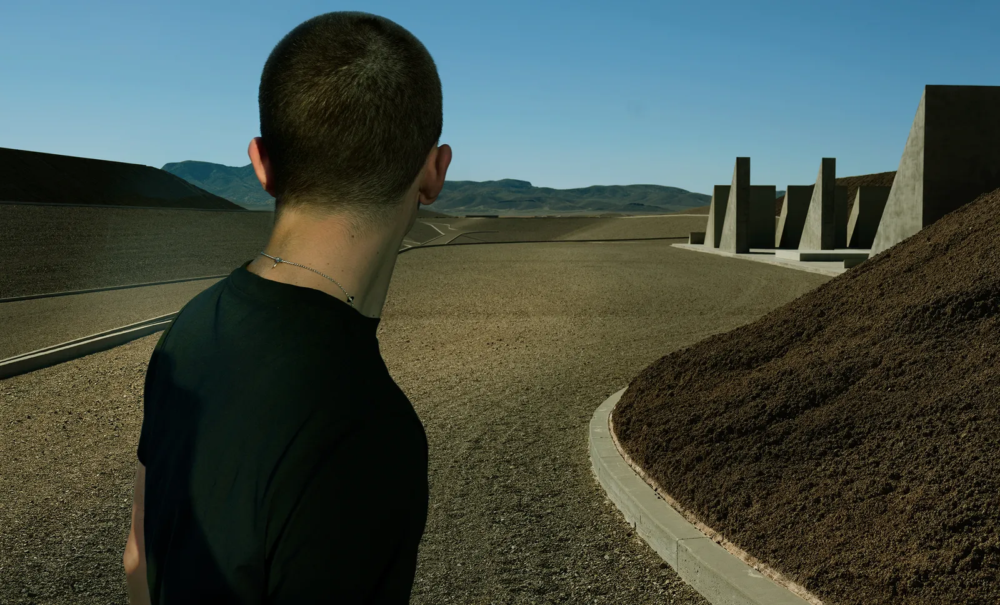
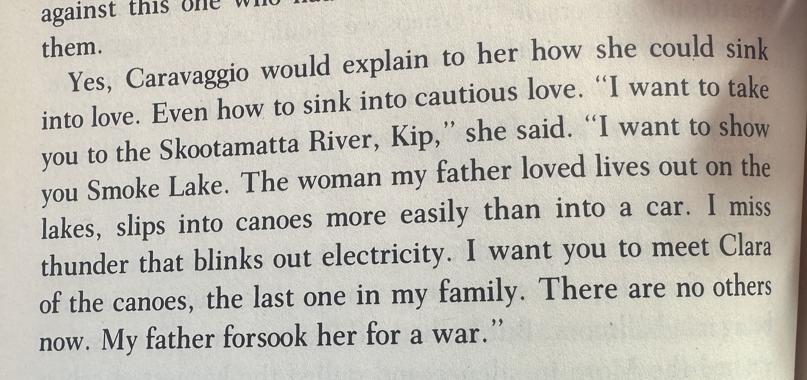
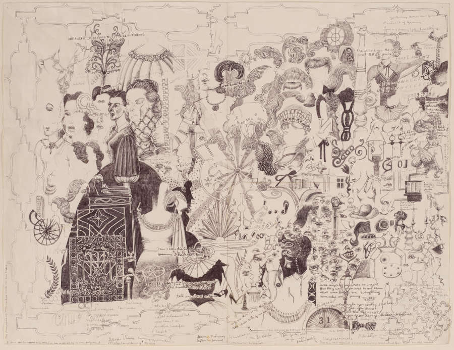

My favorite ten artworks I encountered in 2025
This is a list in no particular order. I am probably forgetting some works.

1. Cow's Skull with Calico Roses. Georgia O'Keefe. //1931 (oil on canvas)

2. Becoming Eve. dir. Tyne Rafaeli (written by Emil Weinstein). // 2025 (stage play)

3. Severance 2x07 "Chikhai Bardo". dir. Jessica Lee Gagné. // 2025 (television episode)

4. New England Rocks. Sharen Kim, 2025. // (utilitarian basswood boxes for containing stones)

5. Untitled (Double Rauschenberg). Robert Rauschenberg and Susan Weil, 1950. // (cyanotype on blueprint paper)

6. A girl stands close behind a horse. He does not see her and is likely to kick her. Night after night, she tends to a fire that she believes will kill her. The girl’s stomach works itself into knots. Augusta Galway Rodgers // 2025 (colored pencil on paper)

7. 5 Red Mickeys. Wriks & 3DENEMY // 2025 (video game)

8. Timothée Chalamet with Complex Two, City. Annie Leibovitz // 2025 (photo)

9. The English Patient. Michael Ondaatje // 1992 (writing)

10. Old Maid. Dawn Clements // 2005 (ballpoint pen and ink on paper)
A year is very long and also not very long. Recency bias probably skews lots of these works to the later end of the year, but my recent arrival at an art and design school has influenced me to care more actively about artworks and art, seeking them out more. These ten were the ones that I thought influneced me greatly and I think of frequently when making my own artwork.
Here are a second set of ten artworks I really loved from the year. Thanks for reading.